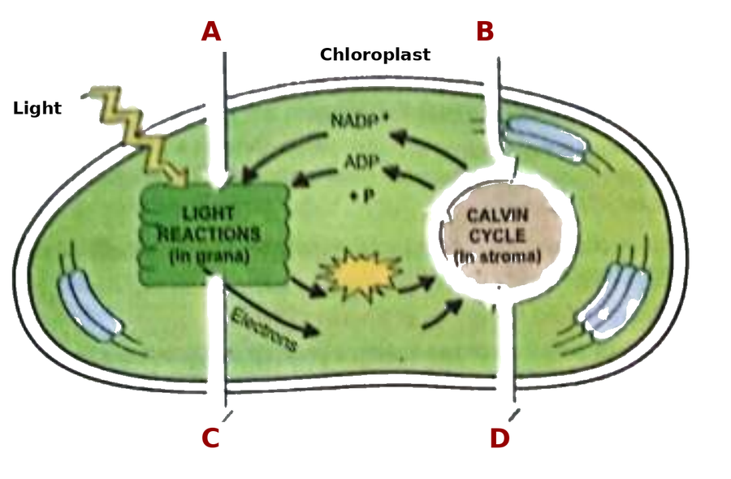

| # | Question | A | B | C | D | Answer |
| 1 | A scientist is studying the methods of inserting the human insulin gene into bacteria. Which branch of biology may this be? | anatomy | biotechnology | physiology | pharmacy | ABCD |
| 2 | Colonial organization is the unique feature of the kingdom: | Animalia | Fungi | Protista | Plantae | ABCD |
| 3 | Which of the following statements correctly represents ribosomes? | made in the nucleus, then work in the cytoplasm, where they make proteins | present only in eukaryotic cells | covered by a single membrane | all of them are attached to the RER | ABCD |
| 4 | In meiosis the chromosome number of the daughter cells becomes half that of the parent cell. This is caused by the: | replication of DNA during interphase I | crossing over during prophase I | separation of sister chromatids during meiosis II | separation of homologous chromosomes during meiosis I | ABCD |
| 5 | In Table 5.2 of your book, which organ system keeps the body in balance by removing pathogens, fighting infections and helping in healing? | lymphatic system | immune system | cardiovascular system | integumentary system | ABCD |
| 6 | Which structure is at a different level of organization from the other three? | neuron | kidney | liver | lung | ABCD |
| 7 | Which of the disaccharides is also called the transport sugar? | maltose | fructose | lactose | sucrose | ABCD |
| 8 | All RNA nucleotides differ from DNA nucleotides in having a different: | nitrogen base | phosphate group | pentose sugar | carboxylic group | ABCD |
| 9 | In ATP, the two bonds between the phosphate groups, shown by wavy lines, are called: | high energy bonds | hydrogen bonds | peptide bonds | double bonds | ABCD |
| 10 | What are the products of the light reactions of photosynthesis? | ATP and NADP | ATP, NADPH and oxygen | ATP, PGA and oxygen | PGA and oxygen | ABCD |
| 2. |
(Chapter 1) Your textbook uses the biological method to find out how malaria spreads. (i) State the hypothesis that was made about the spread of malaria. (1) (ii) Describe the experiment that Ronald Ross performed on sparrows, and state its result. (2) (iii) How was this hypothesis finally tested on human beings? (1) |
4 |
| 3. |
(Chapter 2) Differentiate between the following, giving two differences for each pair: (i) Bacteria and Protists (2) (ii) Fungi and Plants (2) |
4 |
| 4. |
(Chapter 3) (i) A cell is very rich in smooth endoplasmic reticulum (SER). List any two roles in which this cell will be more efficient. (2) (ii) Which organelles are abundant in a salivary gland cell? Name any two and explain your answer. (2) |
4 |
| 5. |
(Chapter 5) Differentiate between the following, giving two differences for each pair: (i) Xylem and phloem (2) (ii) Dermal tissue and ground tissue of a plant (2) |
4 |
| 6. |
(Chapter 6) (i) Carbohydrates are literally called “hydrates of carbon”. Give the ratio in which carbon, hydrogen and oxygen are present in them, and write their general formula. (2) (ii) In a non-dividing cell the hereditary material is present as chromatin. Write the composition of chromatin, and name the bead like structures that are formed when DNA coils around histones. (2) |
4 |
| 7. |
(Chapter 7) (i) In which part of the cell does glycolysis take place, and what is produced when one molecule of glucose is broken down in it? Write the equation given in your textbook. (2) (ii) Name the four stages of aerobic respiration in the order given in your textbook, and state the stage in which oxygen is used. (2) |
4 |
| 8. |
(Chapter 7) Photosynthesis. The figure below is taken from your own textbook. It shows an overview of photosynthesis inside a chloroplast. Four substances have been replaced by the letters A, B, C and D.
 An overview of photosynthesis (from Chapter 7 of your textbook)
(i) Name the substances labelled A, B, C and D. (4)(ii) Write the balanced equation of photosynthesis exactly as your textbook prints it, and name the two things written above and below the arrow. (2) (iii) Name the two energy rich molecules that the light reactions make and then hand over to the Calvin cycle. (2) |
8 |
| 9. |
(Chapter 4) Meiosis. (i) Give any four differences between meiosis I and meiosis II. (4) (ii) A cell of an animal contains 18 chromosomes and divides by meiosis. State: (a) the number of chromosomes in each cell at the end of meiosis I, (1) (b) the number of chromosomes in each cell at the end of meiosis II, (1) (c) the total number of daughter cells formed. (1) (iii) Give one reason why the daughter cells produced by meiosis are not genetically identical to one another. (1) |
8 |